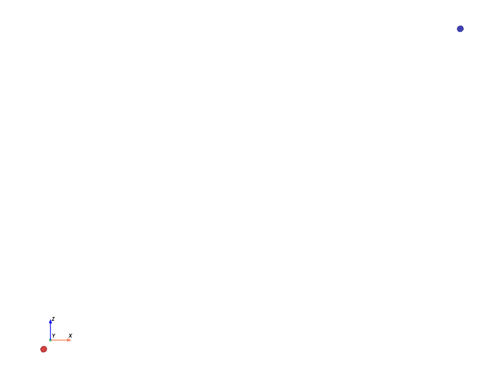

Note
Click here to download the full example code
Reach a fixed target
This example shows how to reach a fixed target with a missile.
import torch
torch.manual_seed(0)
from mlballistics.objects import Sphere
from mlballistics.forces import Gravity, Drag
from mlballistics.scene import Scene
cpos = [(6.500000085681677, -22.012470029172995, 5.000000189989805),
(6.500000085681677, 0.0, 5.000000189989805),
(0.0, 0.0, 1.0)]
# %%
# Some conditions
def initial_conditions(speed, angle, max_speed=30):
"""Convert speed and angle to initial position and velocity.
Parameters
----------
speed
Initial speed of the missile. (m/s)
angle
angle of the missile with respect to the horizontal. (rad)
max_speed
Maximum speed of the missile. (m/s)
Returns
-------
initial_position
Initial position of the missile. (m)
initial_velocity
Initial velocity of the missile. (m/s)
"""
# Speed must be positive and less than max_speed.
speed = torch.clamp(speed, 0.0, max_speed)
initial_position = torch.Tensor([0.0, 0.0, 0.0])
initial_velocity = torch.zeros(3, dtype=torch.float32)
initial_velocity[0] = speed * torch.cos(angle)
initial_velocity[2] = speed * torch.sin(angle)
return initial_position, initial_velocity
Initialize the target (no force + 0 initial velocity = fixed target).
target = Sphere(
radius=0.1,
mass=1.0,
)
target.force = None
inital_x = 13 # * (0.5 + (torch.rand(1) / 2))
inital_z = 10 # * (0.7 + (torch.rand(1) / 2))
target.initial_position = torch.Tensor([inital_x, 0.0, inital_z])
target.initial_velocity = torch.Tensor([0.0, 0.0, 0.0])
Missile with drag.
missile = Sphere(
radius=0.1,
mass=1.0,
force=Gravity(),
)
missile.force = Gravity() + Drag()
# %%
# Random initial conditions.
initial_speed = 30 * (0.5 * torch.rand(1) + 0.5)
initial_angle = torch.pi * torch.rand(1) / 2
initial_speed.requires_grad = True
initial_angle.requires_grad = True
initial_position, initial_velocity = initial_conditions(
initial_speed, initial_angle
)
missile.initial_position = initial_position
missile.initial_velocity = initial_velocity
Simulate the scene.
scene = Scene(objects=[missile, target])
scene.simulate(stop_time=1, n_steps=100)
Plot the trajectories.
import pyvista as pv
plotter_gif = pv.Plotter(off_screen=True)
plotter_gif.open_gif("initial.gif", fps=30)
for time in range(100):
plotter_gif.clear_actors()
actor1 = missile.actor(time=time, color='red', opacity=0.5)
actor2 = target.actor(time=time, color='blue', opacity=0.5)
plotter_gif.add_actor(actor1)
plotter_gif.add_actor(actor2)
plotter_gif.camera_position = cpos
plotter_gif.show_axes()
plotter_gif.write_frame()
plotter_gif.show()
# %%
# Define the forward pass.
def forward(initial_angle, initial_speed):
initial_position, initial_velocity = initial_conditions(
initial_speed, initial_angle
)
missile.initial_position = initial_position
missile.initial_velocity = initial_velocity
scene = Scene(objects=[missile, target])
scene.simulate(stop_time=1, n_steps=100)
loss = torch.norm(missile.trajectory - target.trajectory, dim=1).min()
return loss
# %%
# Optimize the initial conditions.
optimizer = torch.optim.LBFGS(
[initial_angle, initial_speed],
line_search_fn='strong_wolfe'
)
def closure():
optimizer.zero_grad()
loss = forward(initial_angle, initial_speed)
loss.backward()
return loss
def text():
return (f"Angle: {initial_angle.item():.2f} rad, Speed: {initial_speed.item():.2f} m/s, Loss: {closure().item():.2f}")
print("Initial conditions: " + text())
for i in range(2):
if closure().item() > 1e-5:
optimizer.step(closure)
print(f"Step {i+1}: " + text())

Out:
Initial conditions: Angle: 1.21 rad, Speed: 22.44 m/s, Loss: 7.06
Step 1: Angle: 0.81 rad, Speed: 26.45 m/s, Loss: 0.00
Step 2: Angle: 0.81 rad, Speed: 26.46 m/s, Loss: 0.00
Plot the trajectory after optimization.
plotter_gif = pv.Plotter(off_screen=True)
plotter_gif.open_gif("final.gif", fps=30)
collision = False
for time in range(100):
if not collision:
if torch.norm(
missile.trajectory[time, :] - target.trajectory[time, :]
) < missile.radius + target.radius:
collision = True
plotter_gif.clear_actors()
actor1 = missile.actor(time=time, color='red', opacity=0.5)
actor2 = target.actor(time=time, color='blue', opacity=0.5)
plotter_gif.add_actor(actor1)
plotter_gif.add_actor(actor2)
plotter_gif.camera_position = cpos
plotter_gif.show_axes()
plotter_gif.write_frame()
plotter_gif.show()
Total running time of the script: ( 0 minutes 33.825 seconds)
Download Python source code: plot_fixed_target.py